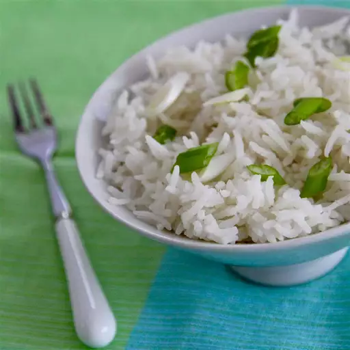

Rice

Classic White Rice
Perfect side dish that you can mix with anything
- Rice: Choose a classic long rice
- Oil: You'll need a good oil to give flavor to yor rice
- Salt: Probably one spoon
- Onion: 1/4 of a ¡n onion will be enough.
- Garlic: This will make your rice to be full of flavor
Steps
- Heat oil in a large saucepan over medium heat.
- Add rice, garlic powder, onion, and salt.
- Add rice, garlic powder, and salt.
- Reduce heat to low, cover, and simmer until water is absorbed and rice is tender, 20 to 30 minutes.